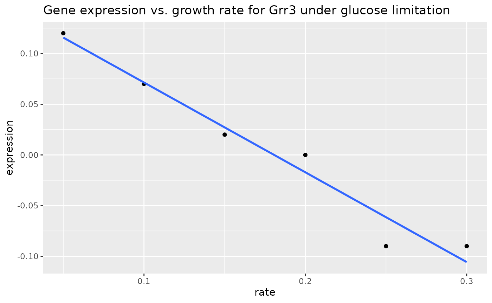

Class 3: Exploring a biological data set
Jay Hesselberth
2022-07-06
Source:vignettes/class-3.Rmd
class-3.Rmd
library(tidyverse)
#> ── Attaching packages ───────────────────────────────── tidyverse 1.3.1 ──
#> ✔ ggplot2 3.3.6 ✔ purrr 0.3.4
#> ✔ tibble 3.1.7 ✔ dplyr 1.0.9
#> ✔ tidyr 1.2.0 ✔ stringr 1.4.0
#> ✔ readr 2.1.2 ✔ forcats 0.5.1
#> ── Conflicts ──────────────────────────────────── tidyverse_conflicts() ──
#> ✖ dplyr::filter() masks stats::filter()
#> ✖ dplyr::lag() masks stats::lag()
library(pbda)Exploring a Biological Data Set
Missing data
Zeroes, NA, NaN and NULL
Don’t use use zeroes to represent missing data.
0is valid observed value.NA(Not Available) is most often use to represent missing data.NaN(Not a Number) is the result of an undefined operation, e.g.0 / 0.NULLmeans “undefined” and is only used in a programming context (i.e., a function that returnsNULL). You can’t putNULLvalues in a data frame.
Let’s examine a data frame with some missing data.
missing_ex
#> # A tibble: 30 × 5
#> group id name value1 value2
#> <dbl> <dbl> <chr> <dbl> <int>
#> 1 0 0 d NA NA
#> 2 0 1 a NA NA
#> 3 0 2 b NA NA
#> 4 0 2 c NA 8
#> 5 0 3 NA NA NA
#> 6 0 NA b NA NA
#> 7 1 0 d NA NA
#> 8 1 1 a 1 NA
#> 9 1 2 b NA NA
#> 10 1 2 c NA NA
#> # … with 20 more rows
filter with is.na()
You can identify variables with NA values by combining filter() and is.na().
# find rows where name is NA
missing_ex %>% filter(is.na(name))
#> # A tibble: 5 × 5
#> group id name value1 value2
#> <dbl> <dbl> <chr> <dbl> <int>
#> 1 0 3 NA NA NA
#> 2 1 3 NA NA NA
#> 3 2 3 NA NA NA
#> 4 3 3 NA 3 6
#> 5 4 3 NA NA NA
# find rows where id is *not* NA
missing_ex %>% filter(!is.na(id))
#> # A tibble: 25 × 5
#> group id name value1 value2
#> <dbl> <dbl> <chr> <dbl> <int>
#> 1 0 0 d NA NA
#> 2 0 1 a NA NA
#> 3 0 2 b NA NA
#> 4 0 2 c NA 8
#> 5 0 3 NA NA NA
#> 6 1 0 d NA NA
#> 7 1 1 a 1 NA
#> 8 1 2 b NA NA
#> 9 1 2 c NA NA
#> 10 1 3 NA NA NA
#> # … with 15 more rows
na.omit()
You can remove all rows containing NA values with na.omit().
Exercises
How many rows of
missing_exhaveNAvalues for eithervalue1orvalue2(27)?How many rows of
missing_exremain after filtering outidvalues ofNA(25)?Calculate the mean for values in each group in
missing_ex. Usesummarize(), then trysummarize_at().
A “simple” biological data set
The brauer_gene_exp data contains a data set from a manuscript describing how gene expression changes in yeast under several nutrient limitation conditions.
We’ll explore this data in broad strokes to get you thinking about how to ask simple biological questions with a complex data set. We’ll draw from a more thorough examination by David Robinson in a blog post—this is a good read if you’re interested in digging in more deeply.
Sorting and sampling data
sorted <- brauer_gene_exp %>%
select(systematic_name, rate, expression) %>%
arrange(rate, desc(expression))
sorted %>% head(10)
#> # A tibble: 10 × 3
#> systematic_name rate expression
#> <chr> <dbl> <dbl>
#> 1 YKR039W 0.05 6.64
#> 2 YJR152W 0.05 6.64
#> 3 YCR098C 0.05 6.64
#> 4 YDR281C 0.05 6.64
#> 5 YLL057C 0.05 6.64
#> 6 YGR087C 0.05 6.64
#> 7 YBR072W 0.05 6.64
#> 8 YAR071W 0.05 6.57
#> 9 YIL166C 0.05 6.5
#> 10 YBR093C 0.05 6.48
sorted %>% tail(10)
#> # A tibble: 10 × 3
#> systematic_name rate expression
#> <chr> <dbl> <dbl>
#> 1 YLR174W 0.3 -4.51
#> 2 YDR343C 0.3 -4.61
#> 3 YLR377C 0.3 -4.62
#> 4 YER065C 0.3 -4.75
#> 5 YDR342C 0.3 -4.83
#> 6 YDR343C 0.3 -4.92
#> 7 YNL117W 0.3 -4.97
#> 8 YJR095W 0.3 -5.14
#> 9 YKL217W 0.3 -5.44
#> 10 YMR303C 0.3 -6.04You can also use the View() function to examine the data in a spreadsheet-like viewer.
Sampling rows
Use sample_n() and sample_frac() to randomly select rows from a large data set. Get a reproducible sample using set.seed()
brauer_gene_exp
#> # A tibble: 198,430 × 7
#> name BP MF systematic_name nutrient rate expression
#> <chr> <chr> <chr> <chr> <chr> <dbl> <dbl>
#> 1 "SFB2" ER to Golgi tr… mole… YNL049C Glucose 0.05 -0.24
#> 2 "" biological pro… mole… YNL095C Glucose 0.05 0.28
#> 3 "QRI7" proteolysis an… meta… YDL104C Glucose 0.05 -0.02
#> 4 "CFT2" mRNA polyadeny… RNA … YLR115W Glucose 0.05 -0.33
#> 5 "SSO2" vesicle fusion* t-SN… YMR183C Glucose 0.05 0.05
#> 6 "PSP2" biological pro… mole… YML017W Glucose 0.05 -0.69
#> 7 "RIB2" riboflavin bio… pseu… YOL066C Glucose 0.05 -0.55
#> 8 "VMA13" vacuolar acidi… hydr… YPR036W Glucose 0.05 -0.75
#> 9 "EDC3" deadenylylatio… mole… YEL015W Glucose 0.05 -0.24
#> 10 "VPS5" protein retent… prot… YOR069W Glucose 0.05 -0.16
#> # … with 198,420 more rows
# sample 1e5 rows
set.seed(1234)
brauer_gene_exp %>% sample_n(1e3)
#> # A tibble: 1,000 × 7
#> name BP MF systematic_name nutrient rate expression
#> <chr> <chr> <chr> <chr> <chr> <dbl> <dbl>
#> 1 "OST4" "protein amin… "pro… YDL232W Sulfate 0.1 0.11
#> 2 "" "biological p… "mol… YHR003C Ammonia 0.1 -0.2
#> 3 "FRE2" "iron ion tra… "fer… YKL220C Leucine 0.15 0.95
#> 4 "" "transport" "tra… YOR071C Ammonia 0.05 -0.76
#> 5 "COS111" "signal trans… "mol… YBR203W Sulfate 0.25 -0.81
#> 6 "" "" "" YBL077W Sulfate 0.2 0.48
#> 7 "" "biological p… "pro… YGR203W Phospha… 0.2 -1.85
#> 8 "CWP2" "cell wall or… "str… YKL096W-A Phospha… 0.15 0.56
#> 9 "COX5B" "mitochondria… "cyt… YIL111W Phospha… 0.2 2.42
#> 10 "" "" "" YJL009W Ammonia 0.25 0.09
#> # … with 990 more rows
# sample 10% of the rows
set.seed(1234)
brauer_gene_exp %>% sample_frac(0.1)
#> # A tibble: 19,843 × 7
#> name BP MF systematic_name nutrient rate expression
#> <chr> <chr> <chr> <chr> <chr> <dbl> <dbl>
#> 1 "OST4" "protein amin… "pro… YDL232W Sulfate 0.1 0.11
#> 2 "" "biological p… "mol… YHR003C Ammonia 0.1 -0.2
#> 3 "FRE2" "iron ion tra… "fer… YKL220C Leucine 0.15 0.95
#> 4 "" "transport" "tra… YOR071C Ammonia 0.05 -0.76
#> 5 "COS111" "signal trans… "mol… YBR203W Sulfate 0.25 -0.81
#> 6 "" "" "" YBL077W Sulfate 0.2 0.48
#> 7 "" "biological p… "pro… YGR203W Phospha… 0.2 -1.85
#> 8 "CWP2" "cell wall or… "str… YKL096W-A Phospha… 0.15 0.56
#> 9 "COX5B" "mitochondria… "cyt… YIL111W Phospha… 0.2 2.42
#> 10 "" "" "" YJL009W Ammonia 0.25 0.09
#> # … with 19,833 more rowsJoining tables
Many biological databases store information in multiple tables. These tables are related by a common identifier: a gene name, or possibly a numeric identifer.
We will use two datasets brauer_gene_exp and yeast_prot_prop to illustrate how data from related tables can be combined using joining operations.
brauer_gene_expcontains gene expression data from yeast grown under different nutrient limitation conditions.yeast_prot_propcontains descriptive data for yeast proteins.
Examine the two tables and identify common variables for linking. If the variables have different names, Use the by argument to left_join() to specify common variables.
gene_exp_rate <- brauer_gene_exp %>% select(systematic_name, rate, expression)
gene_mw <- yeast_prot_prop %>% select(ORF, Mw)
# Find rows from gene_exp_rate with a match in gene_mw and return all variables
left_join(gene_exp_rate, gene_mw, by = c("systematic_name" = "ORF"))
#> # A tibble: 198,430 × 4
#> systematic_name rate expression Mw
#> <chr> <dbl> <dbl> <dbl>
#> 1 YNL049C 0.05 -0.24 98919.
#> 2 YNL095C 0.05 0.28 71197.
#> 3 YDL104C 0.05 -0.02 45545.
#> 4 YLR115W 0.05 -0.33 96256
#> 5 YMR183C 0.05 0.05 33717.
#> 6 YML017W 0.05 -0.69 65589
#> 7 YOL066C 0.05 -0.55 67028.
#> 8 YPR036W 0.05 -0.75 54409.
#> 9 YEL015W 0.05 -0.24 61336.
#> 10 YOR069W 0.05 -0.16 76460.
#> # … with 198,420 more rows
# Find rows from gene_exp_rate with a match in gene_mw and return only the gene_exp_rate variables
semi_join(gene_exp_rate, gene_mw, by = c("systematic_name" = "ORF"))
#> # A tibble: 197,543 × 3
#> systematic_name rate expression
#> <chr> <dbl> <dbl>
#> 1 YNL049C 0.05 -0.24
#> 2 YNL095C 0.05 0.28
#> 3 YDL104C 0.05 -0.02
#> 4 YLR115W 0.05 -0.33
#> 5 YMR183C 0.05 0.05
#> 6 YML017W 0.05 -0.69
#> 7 YOL066C 0.05 -0.55
#> 8 YPR036W 0.05 -0.75
#> 9 YEL015W 0.05 -0.24
#> 10 YOR069W 0.05 -0.16
#> # … with 197,533 more rows
# Find rows from gene_exp_rate *without* a match in gene_mw
anti_join(gene_exp_rate, gene_mw, by = c("systematic_name" = "ORF"))
#> # A tibble: 887 × 3
#> systematic_name rate expression
#> <chr> <dbl> <dbl>
#> 1 YBR075W 0.05 -1.23
#> 2 YPR090W 0.05 -0.59
#> 3 YIR043C 0.05 -0.53
#> 4 YER109C 0.05 -0.24
#> 5 YGR272C 0.05 -0.61
#> 6 YDL038C 0.05 -0.91
#> 7 YJL012C-A 0.05 0.28
#> 8 YJL018W 0.05 0.03
#> 9 YFL057C 0.05 0.23
#> 10 YFL056C 0.05 0.32
#> # … with 877 more rowsRelationships between variables
We’ll use the brauer_gene_exp data set to illustrate how you can use summary statistics to capture relationships between many variables.
This plot illustrates the relationship between gene expression and growth rate for the Grr1/YJR090C gene under glucose limitation.
library(cowplot)
exp_data <- brauer_gene_exp %>%
filter(nutrient == "Glucose" & systematic_name == "YJR090C")
exp_data %>%
ggplot(aes(x = rate, y = expression)) +
geom_point() +
geom_smooth(method = 'lm', se = FALSE) +
ggtitle("Gene expression vs. growth rate for Grr3 under glucose limitation")
#> `geom_smooth()` using formula 'y ~ x'
You can also use lm() to model this relationship.
lm(expression ~ rate, exp_data)
#>
#> Call:
#> lm(formula = expression ~ rate, data = exp_data)
#>
#> Coefficients:
#> (Intercept) rate
#> 0.1600 -0.8857The results of many statistical operations (lm(), t.test(), cor.test()) are not tidy and relevant parameters are not easily assessible. The broom package provides a function called tidy() that tidies the results of these operations.
library(broom)
fit <- exp_data %>% lm(expression ~ rate, data = .)
tidy(fit)
#> # A tibble: 2 × 5
#> term estimate std.error statistic p.value
#> <chr> <dbl> <dbl> <dbl> <dbl>
#> 1 (Intercept) 0.16 0.0176 9.09 0.000811
#> 2 rate -0.886 0.0904 -9.80 0.000607Summaries for mutliple groups
Can we capture linear relationships between expression and rate for all combinations of variables? This is surprisingly easy.
# this takes ~60 seconds to run
models <- brauer_gene_exp %>%
select(systematic_name:expression) %>%
group_by(systematic_name, nutrient) %>%
nest() %>%
# remove `head` to generate the full data set
head() %>%
mutate(
model = map(data, ~ tidy(lm(rate ~ expression, data = .x)))
) %>%
select(-data)Plot the expression / rate relationship for the top-ten most significant genes. Color lines by nutrient.
topten <- models %>%
unnest() %>%
arrange(p.value) %>%
head(10) %>%
select(systematic_name)
topten_exp <- brauer_gene_exp %>% semi_join(topten)
topten_exp %>%
ggplot(aes(x = rate, y = expression, color = nutrient)) +
geom_point() +
geom_smooth(method = 'lm', se = FALSE) +
facet_wrap(~systematic_name + name) +
scale_color_brewer(palette = "Set1")